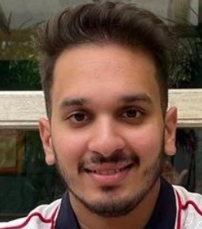

Ishaan Agrawal

Summary
I am a sincere and hardworking student and currently pursuing my B.Tech in Computer Science and Engineering
from the National Institute of Technology, Warangal.
For a brief description about me, click on the profile picture.
Education
- Little Flowers' English School(Higher Secondary Education) till 2018
- The Scindia School(11th and 12th) from 2018-2020
- National Institute of Technology, Warangal(3rd year student) from 2021-2025
Work Experience
No work experience as of now.
Skills
Computer Skills
Sketching Skills
Languages Spoken
Awards and Achievements
Academic level
- Scored the highest percentage in Class 10th Boards(SEE)
- Acquired 2nd rank in the National Anveshika Experimental Skill Test(NAEST)
- Achieved the Gold Honours in Maths
- Conferred with the first prize for Australian National Chemistry Quiz(ANCQ)
Co-Curriculars
- Awarded the top 5 essay writers award by PABSON
- Active participation in debates and speeches
- Served as the Joint Secretary of Painting Club back in Scindia
Hobbies
Contact